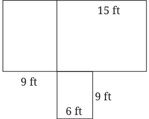

- 1.The Earth travels approximately 940 million kilometres around the
Sun in a year. How many kilometres will it travel in a week?
Ans. We have 52 weeks in a year. We know that 1 million \(= 10\) lakh
So 940 million km \(= 940,000,000\) km
So, 940000000 : 52 Let x be the number of kilometers it travels in a week then
\(\frac{940000000}{52} = \frac{x}{1}\) or \(x = 18076923\)
Hence the Earth travels 18076923 km in a week.
- 2.A mason is building a house in the shape

shown in the diagram. He needs to construct
both the outer walls and the inner wall that separates two rooms. To build a wall of 10-feet, he requires approximately 1450 bricks. How many bricks would he need to build the house? Assume all walls are of the same height and thickness.
Ans. Bricks required for 10 ft wall \(= 1450\) Than ratio is 10:1450 Now total length of walls \(= 12 + 12 + 12 + 15 + 9 + 15 + 9 + 9 + 9 + 6\)
\(= 108\) ft.
Let no. of bricks required be x, Now 10 : 1450 :: 108 : x
Or, \(x = \frac{1450 \times 108}{10} = 15660\)
Number of bricks required are 15660.
Page No. 175
Figure it Out
- 1.Divide ₹4,500 into two parts in the ratio 2 : 3.
Ans. Two parts are ₹ 1800 and ₹ 2700
- 2.In a science lab, acid and water are mixed in the ratio of 1 : 5 to
make a solution. In a bottle that has 240 mL of the solution, how much acid and water does the solution contain?
Ans. In solution, acid is 40 mL and water is 200 mL.
- 3.Blue and yellow paints are mixed in the ratio of 3 : 5 to produce
green paint. To produce 40 mL of green paint, how much of these two colours are needed? To make the paint a lighter shade of green, I added 20 mL of yellow to the mixture. What is the new ratio of blue and yellow in the paint?
Ans. Blue paint used \(= 15\) mL Yellow paint used \(= 25\) mL Ratio of blue to yellow is 1 : 3.
- 4.To make soft idlis, you need to mix rice and urad dal in the ratio
of 2 : 1. If you need 6 cups of this mixture to make idlis tomorrow morning, how many cups of rice and urad dal will you need?
Ans. Rice needed \(= 4\) cups And urad dal needed \(= 2\) cups
- 5.I have one bucket of orange paint that I made by mixing red and
yellow paints in the ratio of 3 : 5. I added another bucket of yellow paint to this mixture. What is the ratio of red paint to yellow paint in the new mixture?
Ans. Ratio of red paint to yellow paint \(= 3\) : 5
Part of red paint in the bucket is \(= \frac{3}{8}\) Part of yellow paint in the bucket is \(= \frac{5}{8}\) Since, one bucket of yellow paint is added. So, quantity of yellow paint \(= \frac{5}{8} + 1 = \frac{13}{8}\) Thus ratio of red paint to yellow paint \(= \frac{3}{8}\) : \(\frac{13}{8} = 3\) : 13.
Page No. 176